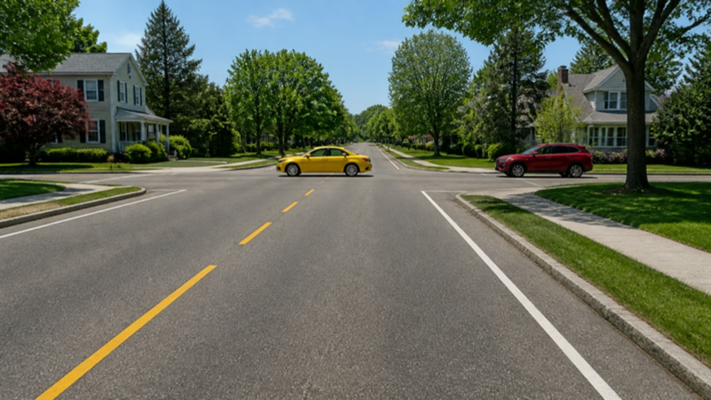
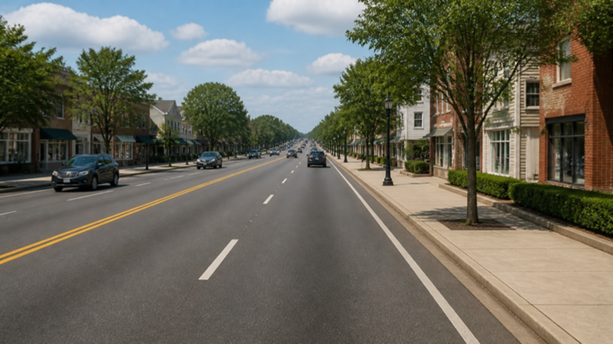
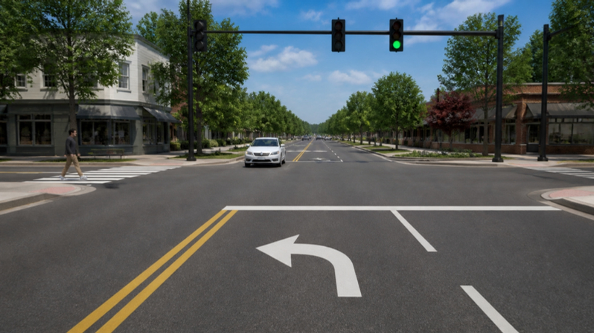

Инструкция: картинки «вид из-за руля» для тренажёра экзамена на права (Коннектикут, США)
Ты делаешь картинки для тренажёра экзамена на права штата Коннектикут. Все картинки — в одном стиле, как на трёх эталонах на следующих страницах этого файла. Повторяй этот стиль 1 в 1.
Стиль (обязательно в каждой картинке)
- Реалистичный 3D-рендер «как в автосимуляторе», фотореализм, без мультяшности.
- Камера — на месте водителя, чуть выше глаз и с лёгким наклоном вниз, чтобы асфальт и вся разметка впереди были хорошо видны. Камера стоит по центру нашей полосы.
- Салона машины не видно совсем: ни капота, ни руля, ни панели, ни стоек, ни зеркал. Только дорога через лобовое стекло.
- Формат 16:10 для всех картинок (например, 1672×1045). Компонуй сцену так, как будто кадр 16:9, а сверху добавь ещё ~12% высоты: продолжение неба, верхушек деревьев, крыш, фонарей — ничего важного для вопроса. Не увеличивай картинку искусственно: присылай оригинальный размер.
- Реалии США: правостороннее движение; осевая линия жёлтая, разделительные линии полос и края дороги белые; знаки по стандарту США (MUTCD); пригородные дома, деревья, тротуары, бордюры.
- Ясный день, мягкий свет — если в задании не сказано другое (ночь, дождь, туман).
- Ничего лишнего: никакого текста, логотипов, номеров машин, водяных знаков; никаких людей, машин, знаков и светофоров, которых нет в задании. Если на знаке по заданию есть надпись (STOP, RAILROAD CROSSING), она должна быть написана правильно.
- Всё, что важно для вопроса, — крупно, целиком в кадре и ничем не закрыто.
- Верхнюю добавленную полосу (~12%) и центр под ней частично закроет наше зеркало заднего вида, нижние ~25% — приборная панель. Светофор над дорогой — как в жизни, но не в самом верху кадра; всё важное — в середине кадра.
Как работать с каждым заданием
- Сначала коротко перечисли по-русски, что будет в кадре: наша полоса, разметка, сигналы, знаки, участники (кто, где, куда едет). Если что-то неоднозначно — спроси, не угадывай.
- Потом сгенерируй одну картинку.
- После картинки сам сверь её со списком из п.1 и честно напиши, где не совпало: число и вид линий разметки, цвет сигнала, направление движения, лишние объекты. Если не совпало — предложи перегенерировать.
Вид назад для зеркал (только когда я попрошу)
Тот же стиль, та же улица и время суток, формат 16:10. Камера смотрит назад из нашей полосы, капота и салона не видно. Не отражай картинку зеркально — это сделаем мы.
Первое задание. Вид из-за руля, ночь, освещённый городской перекрёсток. Мы стоим у стоп-линии в правой полосе двухполосной улицы (по одной полосе в каждую сторону, жёлтая осевая слева от нас). На светофоре прямо напротив горит красный круглый сигнал. Поперечная улица пуста в обе стороны, пешеходов нет.

Эталон 1. Перекрёсток без знаков: камера по центру нашей правой полосы, жёлтая осевая слева, белая краевая справа, машины целиком в кадре.

Эталон 2. Городская улица, по две полосы в каждую сторону, двойная жёлтая осевая; мы в правой полосе у бордюра.

Эталон 3. Регулируемый перекрёсток: светофор крупно и хорошо виден, разметка и переход читаются.